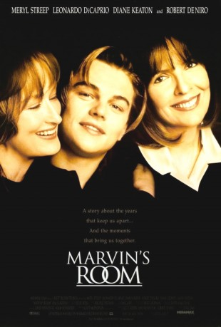

#9391 Marvins Töchter
Alternativ: Marvin's Room
Auszeichnungen: für 1 Oscars nominiert
 
 IMDB-Wertung: 6.7 / 10
IMDB-Wertung: 6.7 / 10  Metascore: 0
Metascore: 0 
Estranged since their father's first stroke some 17 years earlier, Lee and Bessie lead separate lives in separate states. Lee's son, Hank, finds himself committed to a mental institution after setting fire to his mother's house. His younger brother, Charlie, seems unfazed by his brother's eccentricities or his mother's seeming disinterest. When Lee comes to the asylum to spring Hank for a week in Florida so that he can be tested as a possible bone marrow donor for Bessie, Hank is incredulous. "I didn't even know you had a sister," he says. "Remember, every Christmas, when I used to say 'Well, looks like Aunt Bessie didn't send us a card again this year?'" "Oh yeah," Hank says. Meanwhile, Marvin, the two women's bedridden father, has "been dying for the past twenty years." "He's doing it real slow so I don't miss anything," Bessie tells Dr. Wally. In Bessie's regular doctor's absence, it has fallen to Dr. Wally to inform Bessie that she has leukemia and will die without a bone marrow ...
Jahr: 1996
Dauer: 94 Minuten
FSK: 6
Land: USA Studio: MiramaxTonspuren: DD5.1 - ,
Untertitel:
Auflösung: 1080p (1920x1040) Größe: 4003 MB
Genre: Drama
Regisseur: Jerry Zaks
Drehbuch: Scott McPherson, Scott McPherson
Soundtrack: Rachel Portman
Darsteller:
 Meryl Streep als Lee
Meryl Streep als Lee Leonardo DiCaprio als Hank
Leonardo DiCaprio als Hank Diane Keaton als Bessie
Diane Keaton als Bessie Robert De Niro als Dr. Wally
Robert De Niro als Dr. Wally Hume Cronyn als Marvin
Hume Cronyn als Marvin- Gwen Verdon als Ruth
- Hal Scardino als Charlie
 Dan Hedaya als Bob
Dan Hedaya als Bob Margo Martindale als Dr. Charlotte
Margo Martindale als Dr. Charlotte Cynthia Nixon als Retirement Home Director
Cynthia Nixon als Retirement Home Director Kelly Ripa als Coral
Kelly Ripa als Coral- John Callahan als Lance
 Olga Merediz als Beauty Shop Lady
Olga Merediz als Beauty Shop Lady Joe Lisi als Bruno
Joe Lisi als Bruno- Steve DuMouchel als Gas Station Guy
- Bitty Schram als Janine
- Lizbeth MacKay als Novice
- Quintin Bennett als Dr. Wally's Patient (uncredited)
 Victor Garber als (uncredited)
Victor Garber als (uncredited)- Helen Stenborg als Nun on Phone
- Sally Parrish als Nun #3
- Phillip V. Caruso als Disney Park Guest in Bessie Scene (uncredited)
- Andrea Leigh als Patricia (uncredited)
- Cassidy McMillan als Girl at Disney (uncredited)
- L.A. Rothman als Disney Patron (uncredited)
- Tory Wynter als Witness (uncredited)
Datei: X:\1996\Marvins Töchter (1996, FSK6, 1920x1040).mkv seit 30.08.2018
Festplatte: HD 1996-2002
 Es gibt insgesamt 78 Filme in der Gruppe '1996'
Es gibt insgesamt 78 Filme in der Gruppe '1996'